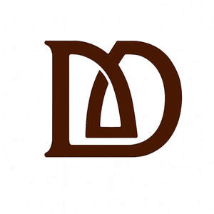

Trade Mark Journal No.2025/041 10 October 2025
UK00004267698 22 September 2025 (14,18,20,21,24,25,26,35)

- Class 14
- Jewellery; key chains of precious metal; charms for jewellery; bracelets; fashion jewellery; trinkets [jewellery]; ornaments for clothing [of precious metal]; cufflinks; earrings; necklaces; key rings; key fobs; key holders of precious metal.
- Class 18
- Handbags; clutch bags; tote bags; backpacks; wallets; purses; card holders; key cases; pouches; cosmetic bags sold empty; travel bags; sling bags; fashion bags; cases made of leather or imitation leather. .
- Class 20
- Storage boxes [furniture]; storage organisers; remote control holders; tissue box holders; household organisers not of metal; storage containers made of wood, plastic or other non-metal materials; Book holders [furniture]; Decorative wood boxes.
- Class 21
- Coasters; cup holders; coffee cup holders; household containers; kitchen storage containers; egg holders for household use; serving trays; tableware not of precious metal; lunch boxes; insulated containers for food or beverages. .
- Class 24
- Textiles; fabrics for use in making household furnishings; table runners; table linen; napkins of textile; cushion covers; bed covers; quilts; throws; curtains of textile or plastic; wall hangings of textile. .
- Class 25
- Clothing; aprons; scarves; jackets; shirts; dresses; skirts; trousers; kaftans; casual wear; footwear; headwear. .
- Class 26
- Decorative fasteners for bags; buttons; zippers; appliqués (haberdashery); ribbons; textile trimmings; Zippers for bags; Buckles for bags; Clasps for bags.
- Class 35
- Retail services connected with the sale of bags, wallets, purses, kitchenware, textiles, clothing, jewellery, bed covers, quilts, throws, household containers, storage containers; online retail services via websites and apps in relation to bags, wallets, purses, kitchenware, textiles, clothing, jewellery, bed covers, quilts, throws, household containers, storage containers; wholesale and distributorship services in relation to bags, wallets, purses, kitchenware, textiles, clothing, jewellery, bed covers, quilts, throws, household containers, storage containers.
Helina Gandhi
Representative: Thomas Marinus Simon Venneker